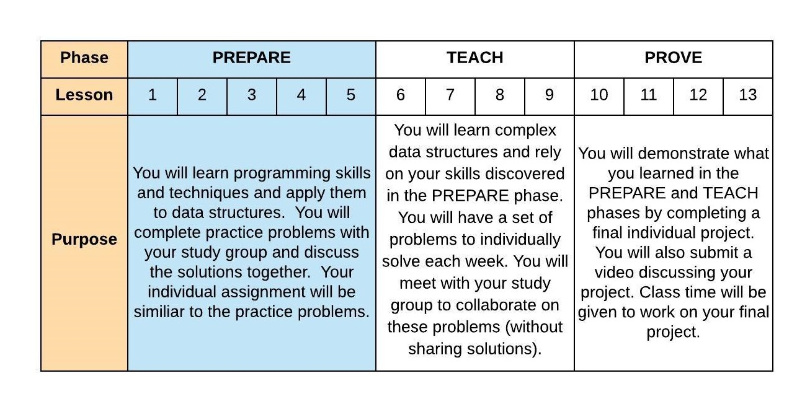
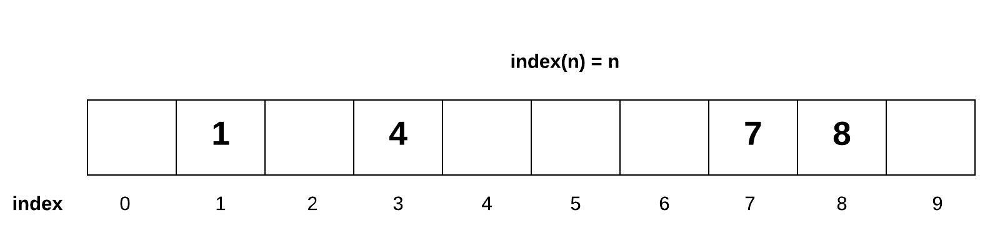
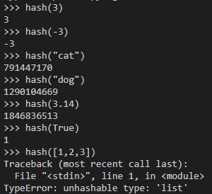
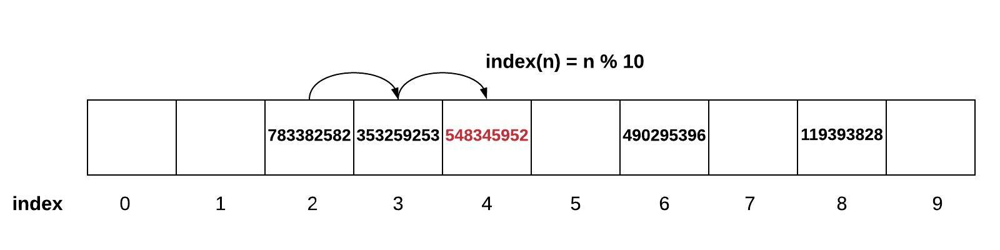
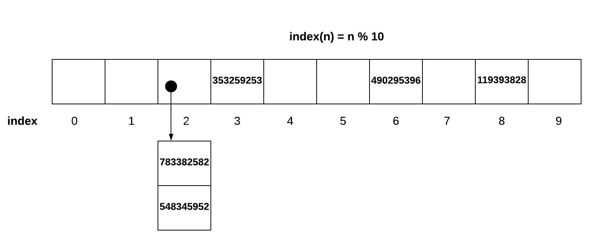

05 Prepare: Answering Technical Interview Questions / Sets
Overview
This week you will explore how you articulate answers to technical questions that are frequently asked during employment interviews. You will practice your interviewing skills using questions related to the Set data structure (ref: Syllabus Course Outcome 5). You are still in the PREPARE phase of the course.
Here is the two-day plan for this lesson:
Day 1 - Complete the reading below. The reading should take one hour to complete. For on-campus students, class time will be used to discuss the reading and explore examples. Online students should spend an additional hour communicating with other students in Slack and reviewing any examples or information provided by your instructor. You should begin to work on 05-Prove independently. You should plan on the assignment taking three hours to complete.
Day 2 - You will work with your study group to complete 05-Teach which will contain practice problems similar to your individual assignment. On-campus students will complete this activity during class time. The activity should take one hour to complete. You should finish work on 05-Prove independently.
The Set Data Structure
Previously we learned about lists, stacks, and queues. The location of each item in these data structures was very important to the proper use of the data structure. Not all data structures worry about the order of the data. The Set data structure is an example of one for which order is not important.
Besides the lack of order, the Set has another difference. Could we add duplicate data to a list, stack, or queue? The answer is yes and this situation is very common. However, the Set is constrained to allow no duplicates. Knowing that there will be no duplicates (and because we don't care about the order) allows us to store the information in a Set so as to make it very efficient to determine if data is in the Set. This test of membership in the Set is the most important operation belonging to this data structure. Using a technique called hashing, the Set is able to add, remove, and test for membership in O(1) time.
Hashing and Sets
To achieve the O(1) time for Set operations, we will consider a very simple example. Assume we wanted to store all positive one digit numbers (0 to 9) into a list. How would we store these numbers if we wanted to have an O(1) performance for adding, removing, or testing for membership? If we used the value to determine the index into the list, we might be able to achieve O(1). If we wrote an equation: index(n) = n, this would be that if we wanted to add the number 7, then we would put it into index(7) which equals 7. If we wanted to add the number 4, then we would put it into index(4) which equals 4. For this to work, our list will need to be exactly size 10.
The list above shows several one digit numbers added to our list according to the rule index(n) = n. Notice that the if we wanted to know if a number existed in the list, then we would use the formula to lookup the index. This would result in an O(1) performance. Also notice that the list is not populated in the same way that we learned about dynamic arrays. We call this a sparse list because the list is not guarenteed to be filled from left to right. This
We call this sparse list a Set. Notice that there is only one place for each value to go. Therefore, the set does not allow duplicates because there would be no place for the duplciate value to placed.
Imagine we changed this simple example to include all 9 digit positive numbers (0 to 999999999). How big would the list need to be store these numbers and still achieve O(1) performance? We would need a list of size 1 billion. While this would work, the amount of memory is prohibitive. To store just one 10 digit number we would need memory for a 1 billion sized spare list. Could we do this we something smaller such as a sparse list of size 10? We can accomplish this by use the modulo (%) operator. If we wrote the equation as: index(n) = n % 100, then we would be able store values properly. The value 353,259,253 would be placed based on index(353,259,253) = 353,259,253 % 10 = 3. The value 783,382,582 would be placed in index 2.

The equation we used above can be generalized as follows: index(n) = n % sparse_list_size. This works great for numbers. We can also use equations like this for strings and floats. The generic function is: index(n) = hash(n) % sparse_list_size. The hash(n) represents what is called a hashing function. The hashing function will convert non-integers into integers so that the modulo operation can be performed. Python has a built-in hash function. The values returned by the hash function will vary everytime you run a Python script but they will be consistent while you are running a script to completion. Not everything can be hashed. For example, a list in Python can not be hashed. It is common to say that the index(n) is the hashing function for a Set and that the values in a Set have been hashed.
If we only have 100 spots and there are up to 10 billion possible values, it reasonable to expect that perhaps their is a weakness in the data structure. Using the same diagram above, what would happen if we tried to add 548,345,952? This would also be placed in index 2. This is called a conflict.
Dealing with Conflicts
There are 2 general ways to deal with conflict in a sparse list. The first option is called Open Addressing. If we use our index(n) hashing function and find that something already occupies the space (or the item in that space is not what we are looking for), then Open Addressing strategy will tell us move to the next available space. There are multiple ways that this can be done, but the simplist method would be to look to the right one spot at a time. The danger with this approach is that a conflict can result in the creation of more conflicts. In the example below, when 548,345,952 was added, since there was a conflict in index 2, we would move over to index 4. Since there is something in 4 already, we have to move to 5. Unfortantely, now any number ending in a 5 will also find a conflict. This can result in a rapidly growing clusters of conflicts.
A second option is called Chaining. Instead of looking for a new place for our data, we can make a list of values that occupy the same space. This does not have the adverse affect of creating clusters of conflict.
In both of these options to solve conflicts, we have an adverse effect on our O(1) performance. The use of the index(n) hashing function is what gives us the O(1) timing. If we have to search either through several positions to find a value or if we have to search the chained list, we may apporach O(n) if the amount of conflict is high. To avoid this, we need to increase the size of the sparsed list if the amount of conflict is too high. When we increase the size of the sparsed list, then we need to re-position all of the values by running the index(n) function again with the increased sparsed list size.
Applications with Sets
Sets have the following key characteristics:
Fast peformance for adding, removing, and finding (membership test)
No duplicates are allowed. Most Set implementations (including Python) will not give us an error when you try to add a duplicate value. This is done so that we can easily convert from a list which may have duplicates to a set that contains just the unique values.
The Set does not keep values in order. This occurs because the index(n) hashing function is not based on the order the value was added.
The Set has many uses including:
Finding the unique values in a list
Providing quick access to unique results previously calculated
Performing mathematical set operations such as an intersection (common values between 2 sets) and union (all values within 2 sets)
Sets in Python
In Python, a Set can be represented using a curly braces (e.g. my_set = {1, 2, 3}) To create an empty set (unlike an empty list), we use the code: empty_set = set(). The in operator can be used to determine membership in the Set. The performance of the Set is based on the performance of the hashing algorithm.
| Common Set Operation | Description | Python Code | Performance |
|---|---|---|---|
|
Adds "value" to the Set | my_set.add(value) | O(1) - Performance of hashing the value (assuming good conflict resolution) |
| remove(value) | Remove the "value" from the Set | my_set.remove(value) | O(1) - Performance of hashing the value (assuming good conflict resolution) |
| member(value) | Determine if "value" is in the Set | if value in my_set: | O(1) - Performance of hashing the value (assuming good conflict resolution) |
| size() | Return the number of items in the Set | length = len(my_set) | O(1) - Performance of returning the size of the set |
There are also mathematical operations to perform an intersection and union between two sets. The code below demonstrates these capabilities in Python:
set1 = {1, 2, 3, 4, 5}
set2 = {4, 5, 6, 7, 8}
set3 = intersection(set1, set2) # This will result in {4, 5}
set3 = set1 & set2 # Alternate way of writing an intersection
set4 = union(set1, set2) # This will result in {1, 2, 3, 4, 5, 6, 7, 8}
set4 = set1 | set2 # Alternate way of writing a union
The Python library also includes a class called dict which stands for dictinoary which is built using the Set. The dictionary in Python also uses the curly brace notation. We will learn more about this in the future when we study Maps.
Answering Technical Interview Questions
It can feel intimidating, but most interviews that relate to software engineering will require us to answer technical questions. These questions frequently include questinos related to data structures. Questions like:
How would you describe the performance of a Set?
What is hashing and why is it used with a Set?
When would you use a Set instead of a List?
You want to practice questions that relate the purpose, behavior, and performance of a data structure. Your responses should be concise lasting perhaps no more than 30 seconds. Often these questions are asked within the context of a problem to be solved. In your Group Practice and Indivdual Assignment this week, you will be asked to both respond to "how" you would solve the problem and actually solve the problem by writing code.
Frequently, the interviewer is more interested in your thought process to getting to the "how" instead of the actual solution. Even so, its a valuable exercise to also solve the problems so you are better able to describe the "how" in an actual interview.
When you approach a problem to solve with a limited amount of time to respond, you should consider the following guidance:
Understand the problem being asked. You should not hesitate to ask clarifying questions to avoid assumptions. For example: what is the valid range of numbers, are duplicates allowed, will there be invalid data in the collection? These questions serve two purposes. First, they help you to understand the problem and second, this communicates to the interviewer that you are aware of common constraints and errors that can occur in software.
Solve the problem by walking through scenarios. Either verbally or on a whiteboard write or draw out the process of solving the problem for a simple example without introducing code. The simple examples usually are those in which there are no failure cases or unusual conditions.
Identify software techniques such as Data Structures that can help solve the problem you are analyzing. Talk out loud about the purposes, behavior, and/or performance of the Data Structure you are using so that the interviewer can see your decision making process.
Propose a solution. Start to discuss the scenarios that will cause your solution not to work or may be less than efficient. Refine your solution as you discuss these scenarios.
Don't worry about getting the answer to the problem completely right. Unlike a college coding assignment, you will likely have much less time to develop a solution in the interview.